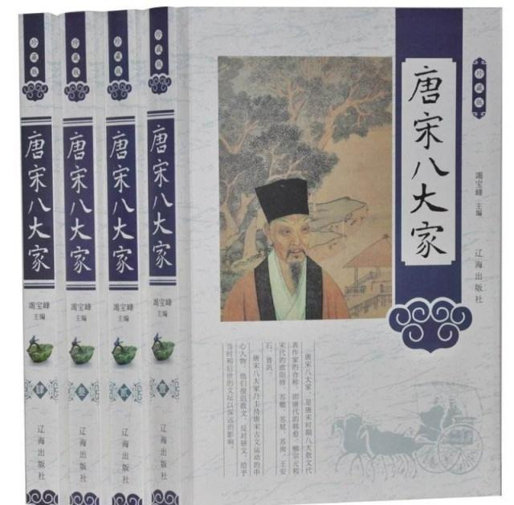

历史上的唐宋八大家是哪八位？
中国的文坛最负盛名的就是唐诗宋词，唐宋八大家就是指唐宋时期八大散文作家的合称，他们有唐朝的也有宋朝的，唐宋文坛以他们的文学成就最高。
据查，明初朱右将八位散文家的文章编成《八先生文集》，八大家之名始于此。明中叶唐顺之所撰《文编》，仅取唐宋八位散文家的文章，其他文章一律不收。为唐宋八大家的名称的定型和流传起了一定作用。
后来茅坤根据朱、唐的编法选了八家的文章，辑为《唐宋八大家文钞》，唐宋八大家之称遂定。
来看看唐宋八大家都是谁？
韩愈，字退之，唐代杰出的文学家、政治家，同时也是唐宋八大家之首。贞元八年登进士第，两任节度推官，累官监察御史。因论事被贬，历都官员外郎等职。元和二年，参与讨平“淮西之乱”，后又因谏迎佛骨被贬至潮州。长庆四年病逝，年57岁。他的代表作品《春雪》。
柳宗元，字子厚，唐代文学家，世称“柳河东”。他一生作品达600余篇，骈文有近百篇，笔锋犀利，讽刺辛辣。贞元九年进士，819年客死于柳州，享年46岁。他的代表作品，就是那首《江雪》。
欧阳修，字永叔，号醉翁，北宋时期的政治家，史学家、诗人。欧阳修，自幼喜爱读书，但是科举之路却非常坎坷，两次落榜。天圣八年，参加宋仁宗主持的殿试，位列二甲进士，而后被恩师胥偃定为女婿，步入官场。他的代表作品《蝶恋花》。
苏洵，字明允，四川眉山人。少时不好读，年二十七，始发愤为学。岁馀举进士，又举茂才异等，皆不中，返回家中，闭门苦读，遂通六经，百家之说，下笔顷刻数千言。北宋宝元三年，苏洵刻苦研读学问已成。苏洵的代表作品《六国论》。
苏轼，字子瞻，号东坡居士，是父亲苏洵的第五个儿子。宋朝著名的书法家，文学家，嘉佑二年，苏轼进士及第。宋神宗时，曾在杭州、密州等地任职。宋哲宗时，曾任翰林学士、侍读学士等职。有多方面的才能，诗、词、散文、书画等方面留下很多作品，苏轼善书，为“宋四家”之一。他的代表作品《念奴娇.赤壁怀古》。
苏辙，字子由，嘉佑二年与其兄苏轼同登进士科，北宋文学家，诗人，官至宰相。宋神宗时，为制置三司例司属官，因反对王安石变法，出为河南推官。与父亲苏洵、兄苏轼，合称三苏，苏辙的代表作品《春尽》。
王安石，字介甫，号半仙，北宋著名的思想家，改革家。庆历二年，王安石进士及第，历任扬州签判、舒州通判等职。熙宁二年，任参知政事，次年拜相，主持变法。元祐元年，保守派得势，新法皆废，郁然病逝于钟山。代表作品《泊船瓜洲》。
曾巩，字子固，世称南丰先生，北宋文学家、史学家。曾巩自幼天资聪慧，十二岁即能为文，嘉佑二年，进士及第。历任齐州、襄州、亳州等知州。元丰四年，以史学才能被委任史官修撰，管勾编修院，判太常寺兼礼仪事。代表作品《墨池记》。